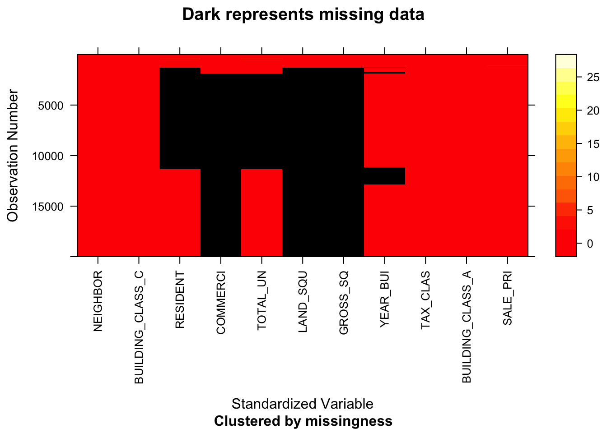

Chapter 4 Missing values
4.1 Describe the Missing Values
## Min. 1st Qu. Median Mean 3rd Qu. Max.
## 0.000 0.000 3.000 2.274 5.000 6.000## LAND_SQUARE_FEET GROSS_SQUARE_FEET COMMERCIAL_UNITS RESIDENTIAL_UNITS
## 40310 40310 37875 21272
## TOTAL_UNITS YEAR_BUILT BOROUGH Name
## 18837 5302 0 0
## NEIGHBORHOOD BUILDING_CLASS_CATEGORY TAX_CLASS_AT_TIME_OF_SALE BUILDING_CLASS_AT_TIME_OF_SALE
## 0 0 0 0
## SALE_PRICE SALE_DATE
## 0 0## [1] 6## # A tibble: 6 × 3
## n_miss_in_var n_vars pct_vars
## <int> <int> <dbl>
## 1 0 8 57.1
## 2 5302 1 7.14
## 3 18837 1 7.14
## 4 21272 1 7.14
## 5 37875 1 7.14
## 6 40310 2 14.3Firstly, we describe missing patterns by row, and we can know the maximum numbers of missing value for a row is 6. And the minimum numbers of missing value for a row is 0. Since the mean of numbers of missing value is 2.274, we can find that the most rows who have the numbers of missing value are less or equal to 5.
Second, we describe missing patterns by column, and from the result we can see that BOROUGH, Name, NEIGHBORHOOD, BUILDING_CLASS_CATEGORY, TAX_CLASS_AT_TIME_OF_SALE, BUILDING_CLASS_AT_TIME_OF_SALE, SALE_PRICE and SALE_DATE do not have missing value. We conclude that there are total 6 missing variables.
Last, from the table above we know that there are 8 variables with 0 missings, comprising 57.14% of variables in the data set. There is 1 variable with 5302 missings.There is 1 variable with 18837 missings.
4.2 Exploring the Missing Values

The above graph provides a summary of whether the data is missing or not. It also provides the amount of missings in each columns. So here, LAND_SQUARE_FEET and GROSS_SQUARE_FEET have the most missing data, with LAND_SQUARE_FEET having 55.93% missing data and GROSS_SQUARE_FEET have 55.93%.
We also try to add facets in above plots with different Borough.
## [1] 163906## NOTE: The following pairs of variables appear to have the same missingness pattern.
## Please verify whether they are in fact logically distinct variables.
## [,1] [,2]
## [1,] "LAND_SQUARE_FEET" "GROSS_SQUARE_FEET"
## NOTE: In the following pairs of variables, the missingness pattern of the second is a subset of the first.
## Please verify whether they are in fact logically distinct variables.
## [,1] [,2]
## [1,] "RESIDENTIAL_UNITS" "TOTAL_UNITS"
## [2,] "COMMERCIAL_UNITS" "TOTAL_UNITS"## NOTE: In the following pairs of variables, the missingness pattern of the second is a subset of the first.
## Please verify whether they are in fact logically distinct variables.
## [,1] [,2]
## [1,] "RESIDENTIAL_UNITS" "TOTAL_UNITS"
## [2,] "COMMERCIAL_UNITS" "TOTAL_UNITS"## NOTE: The following pairs of variables appear to have the same missingness pattern.
## Please verify whether they are in fact logically distinct variables.
## [,1] [,2]
## [1,] "LAND_SQUARE_FEET" "GROSS_SQUARE_FEET"These four graphs show that the information on the missing value of the data set. There are 163906 values missing in it. Since there are 72067 rows in the data set, we choose to do graphs visualization every 20,000 rows.
4.3 Excluding Missing Values from Analyses
When dealing with data that is missing at random, related data can be deleted to reduce bias. We delete the columns with missing values above 20,000 and then drop the missing values. After removing rows with missing values, we get:
## [1] "BOROUGH" "Name" "NEIGHBORHOOD"
## [4] "BUILDING_CLASS_CATEGORY" "TOTAL_UNITS" "YEAR_BUILT"
## [7] "TAX_CLASS_AT_TIME_OF_SALE" "BUILDING_CLASS_AT_TIME_OF_SALE" "SALE_PRICE"
## [10] "SALE_DATE"## tibble [48,156 × 10] (S3: tbl_df/tbl/data.frame)
## $ BOROUGH : chr [1:48156] "1" "1" "1" "1" ...
## $ Name : Factor w/ 5 levels "Bronx","Brooklyn",..: 3 3 3 3 3 3 3 3 3 3 ...
## $ NEIGHBORHOOD : chr [1:48156] "ALPHABET CITY" "ALPHABET CITY" "ALPHABET CITY" "ALPHABET CITY" ...
## $ BUILDING_CLASS_CATEGORY : chr [1:48156] "02 TWO FAMILY DWELLINGS" "07 RENTALS - WALKUP APARTMENTS" "07 RENTALS - WALKUP APARTMENTS" "07 RENTALS - WALKUP APARTMENTS" ...
## $ TOTAL_UNITS : num [1:48156] 2 20 29 10 30 8 10 9 10 10 ...
## $ YEAR_BUILT : num [1:48156] 2003 1900 1910 1910 1900 ...
## $ TAX_CLASS_AT_TIME_OF_SALE : chr [1:48156] "1" "2" "2" "2" ...
## $ BUILDING_CLASS_AT_TIME_OF_SALE: chr [1:48156] "B1" "C4" "C1" "C4" ...
## $ SALE_PRICE : num [1:48156] 3025000 154196 7500000 5650000 11600000 ...
## $ SALE_DATE : POSIXct[1:48156], format: "2021-12-16" "2021-06-11" "2021-06-14" "2022-03-30" ...
## - attr(*, "na.action")= 'omit' Named int [1:23911] 17 18 19 20 21 22 23 24 25 26 ...
## ..- attr(*, "names")= chr [1:23911] "17" "18" "19" "20" ...## # A tibble: 6 × 10
## BOROUGH Name NEIGHBORHOOD BUILDING_CLASS_CATEG… TOTAL_UNITS YEAR_BUILT TAX_CLASS_AT_TIME_… BUILDING_CLASS_AT_T… SALE_PRICE
## <chr> <fct> <chr> <chr> <dbl> <dbl> <chr> <chr> <dbl>
## 1 1 Manhattan ALPHABET CITY 02 TWO FAMILY DWELLI… 2 2003 1 B1 3025000
## 2 1 Manhattan ALPHABET CITY 07 RENTALS - WALKUP … 20 1900 2 C4 154196
## 3 1 Manhattan ALPHABET CITY 07 RENTALS - WALKUP … 29 1910 2 C1 7500000
## 4 1 Manhattan ALPHABET CITY 07 RENTALS - WALKUP … 10 1910 2 C4 5650000
## 5 1 Manhattan ALPHABET CITY 07 RENTALS - WALKUP … 30 1900 2 C7 11600000
## 6 1 Manhattan ALPHABET CITY 07 RENTALS - WALKUP … 8 1900 2 C4 4500000
## # … with 1 more variable: SALE_DATE <dttm>